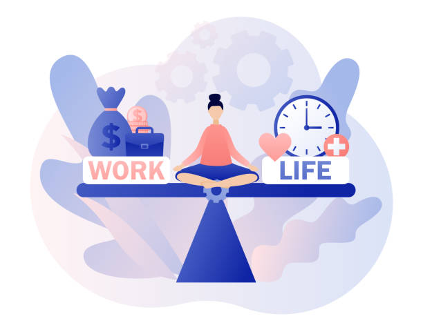
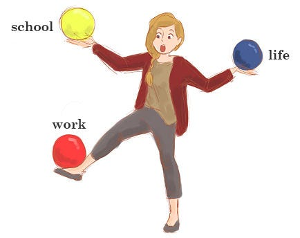

Going to school while balancing a full-time job plus children seems impossible, right?
But it is not. Read the attached article to learn how to maintain work-life-school balance.

Let's be real: it is impossible to fit everything in all at once.
So instead of doing that, prioritize what to do first and let go of things that are not important right now and can be accomplished later.
Read more on how to say no in this article: Balancing School and Life.

Don't forget that your mental health is just as important.
Set some time for yourself to relax and unwind so you don't feel the burnout.
Read more on how to unwind in this article: How to Unwind After Work.